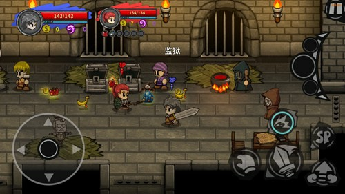
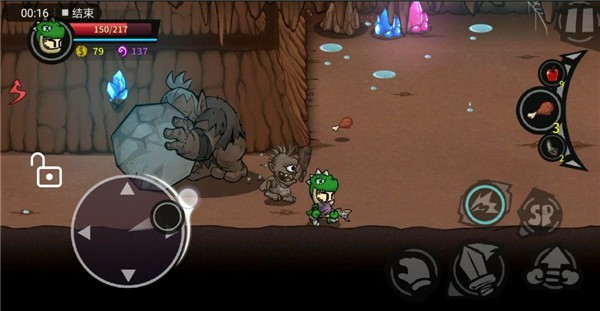
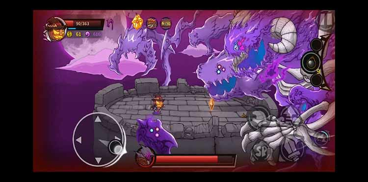
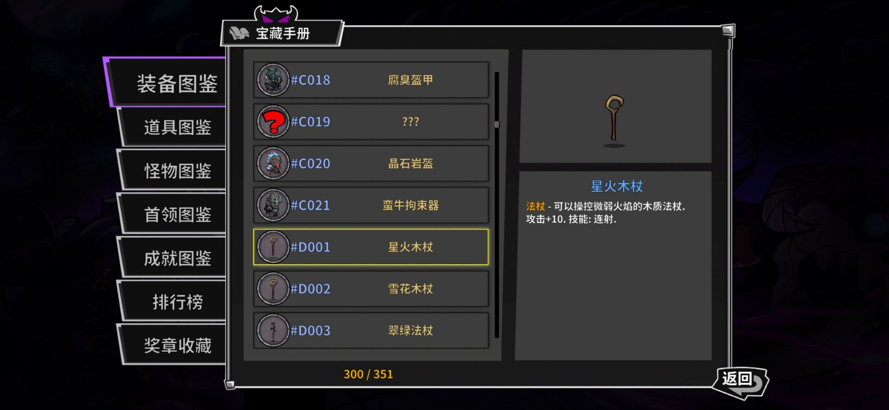
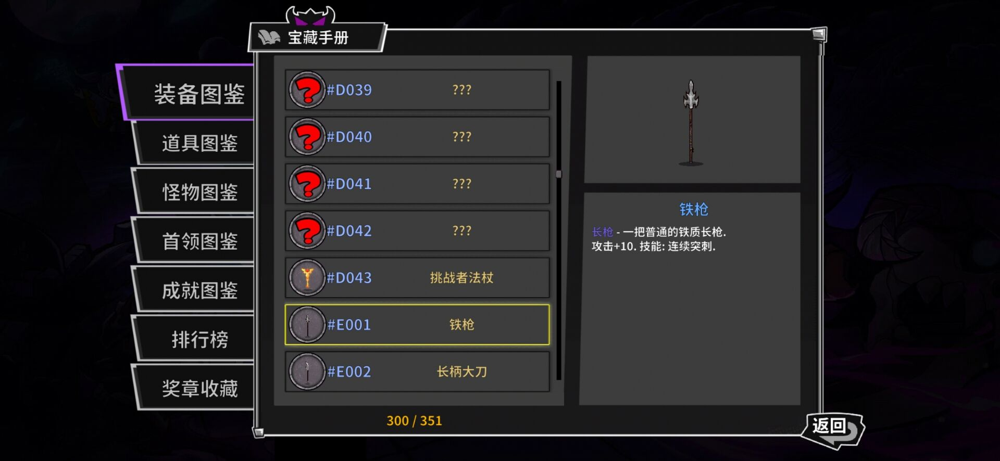
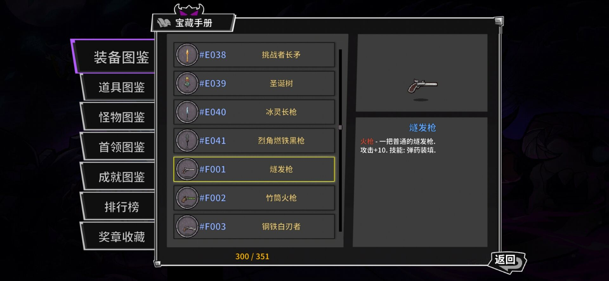
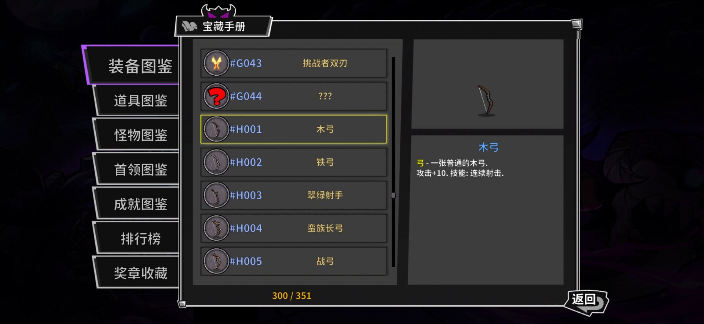
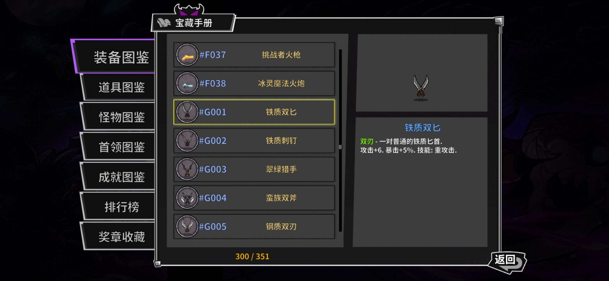
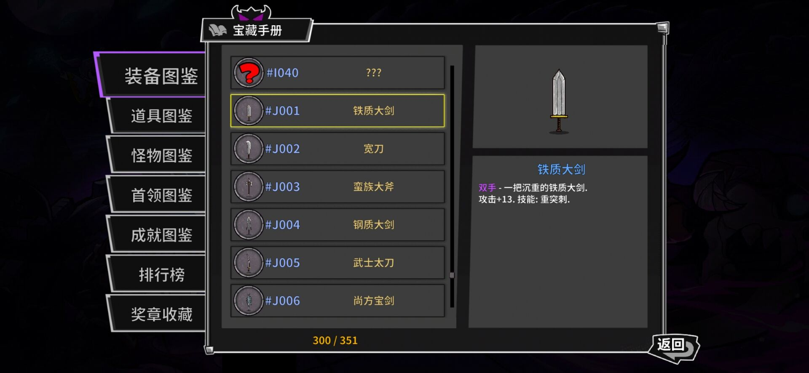
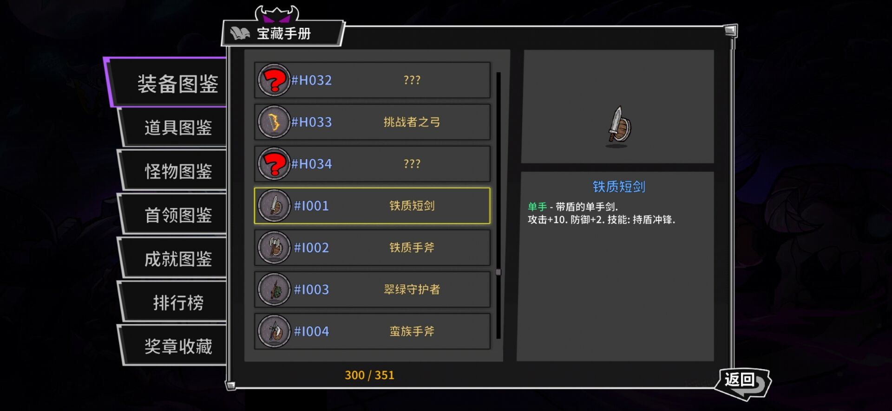

游戏玩法
横版动作闯关：横板过关是一种游戏中人物的前进方式，指在游戏的过程中，人物和视角从左到右的不断前进。此打击感适中，操作微硬核，掌握跳劈直奔爽感。 游戏采用一次性买断式玩法，玩家可以体验第一张地图，再自行选择。18元的高级执照将开启另外他三张地图(包括最终boss地图)和全部难度挑战。热衷粉可以另外18元购买最新两张地图(沿途boss地图)以及 之后更新所有地图的权限,游戏截图如下



武器介绍--法杖

攻速速度慢，攻击范围长、后摇大。
sp:瞬移
优点：技能
缺点：群体
技巧：法杖攻击速度慢、后摇大，原本瞬移应该是无
敌的技能，奈何前摇太大，而且无法闪避射线、雷击
这种技能，但熟练后依旧很灵活。
但面对群体怪且没技能的时候很被动，只能逃命，但
在这途中容易拉怪，所以需要会拉怪和走位，也需要
一定反应力。比较适合适合新手玩家。不同的法杖也
有不同的技能，极大地丰富了游戏的玩法。
武器介绍--长枪

攻击速度适中，攻击范围长，后摇较大。
sp:冲刺，冲刺期间无法不会被打断
适合：追打
缺点：后摇
技巧：没有瞬间释放技能的如犀牛、人马的可以可以一
直捅，攻击可以突进，捅到墙边都起不来那种。
弱点也很明显，只能捅到前方的怪物，再远点一般都是
远程，萌新不会管这些怪物。而攻击有僵直，再加上还
会往前突进一小段和挡视野问题，不会玩的经常在这个
时候被击倒，失去了捅到墙边的机会。需要一定的操作
技巧。不同的长枪也有不同的技能，极大地丰富了游戏
的玩法。
武器介绍--火枪

攻击速度适中，攻击范围长，后摇正常。
sp:翻滚，翻滚后将留下一团火药云，攻击火药云
会产生爆炸，造成范围伤害。
适合：风筝
缺点：冲刺
技巧：适合边走边打的武器，近身打伤害不俗，但对于
小狗和骨龙这种突进冲刺技能没有躲避技能，只能走位
躲避，灵活性也没有双刀高。不同的火枪也有不同的技
能，极大地丰富了游戏的玩法。
武器介绍--长弓

攻击速度快，攻击范围极长，后摇较大。
sp:翻滚，翻滚后下一次攻击将射出攻击距离很远的穿透箭
适合：站桩
缺点：近战
技巧：长弓可以击退处于冲撞霸体中的敌人，如果攻速
够快，就算你站着不动输出，怪物也没法越过防线。
缺点就是不适合和怪物纠缠，跳砍在弓箭手里不太欢迎，
因为在游戏中有着抛物线的设定，跳砍只能打出微薄的
伤害，但站桩输出绝对给力。不同的长弓也有不同的技
能，极大地丰富了游戏的玩法。
武器介绍--双刃

攻击速度极快，攻击范围短，后摇较小。
sp:向前滑步，进行一小段位移
适合：跳砍
缺点：容易贪刀，从而受到伤害
技巧：即使在怪群里也能跳砍跳砍输出，在BOSS战时
可上下跳砍偷刀，并在落地时快速逃离。
缺点明显，上手难度高，需要对怪物的攻击、技能了解，
并且偷刀后需要快速反应，大佬们很喜欢双刀。不同的
双刃也有不同的技能，极大地丰富了游戏的玩法。
武器介绍--大剑

攻击速度慢，攻击范围适中，后摇极大。
sp:蓄力旋风斩，开始蓄力，期间减速，蓄力完成后，
释放旋风斩，造成范围伤害。
适合：游击
缺点：追打
技巧：大剑在连续攻击时可能会因为有瞬发的怪物
而被击倒，这是因为攻击后摇极大容易失误，大佬们会
在瞬发怪物放技能后接近再打一套，随后就后退一点躲技
能。不同的大剑也有不同的技能，极大地丰富了游戏的玩法。
武器介绍--短刃

攻击速度较慢，攻击范围适中，后摇大
sp:举起盾牌呈防御姿态，期间速度降低，
受到的伤害降低
适合：跳砍
缺点：连续攻击
技巧：短刃是游戏中一把各项属性都偏于中规
中矩的武器，一些走位不好的同学可以充分利用
sp固定属性技能进行躲避伤害。不同的短刃也有
不同的技能，极大地丰富了游戏的玩法。
部分关卡boss速过，武器:邪能巨刃(长剑)